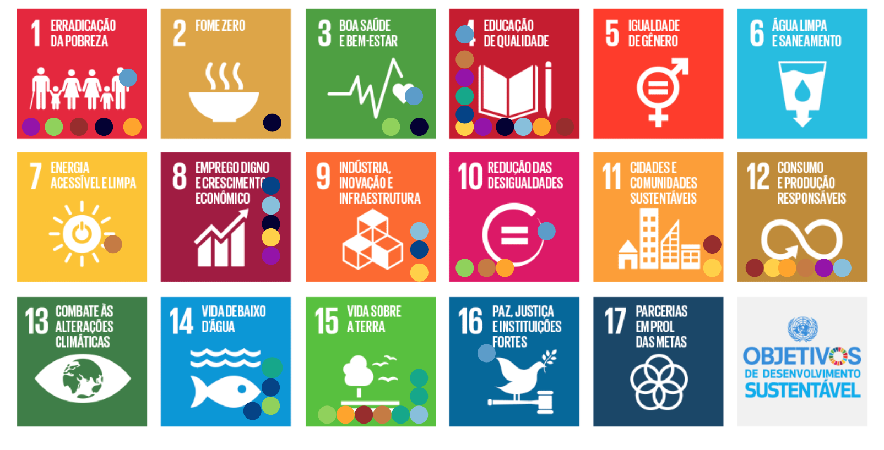
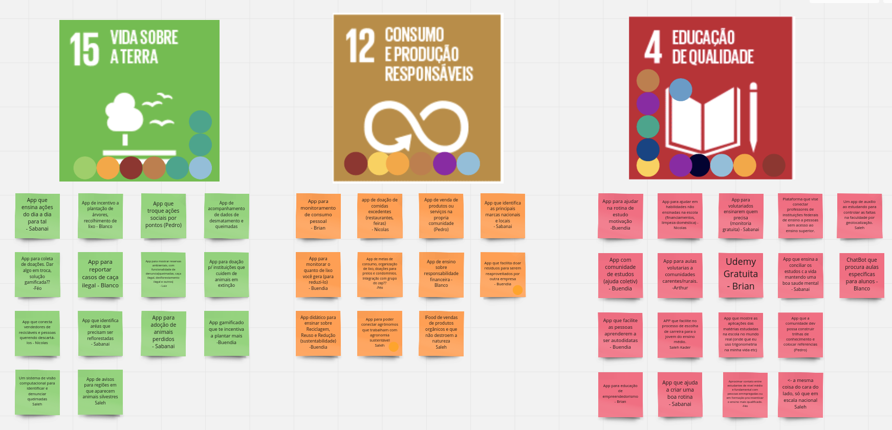
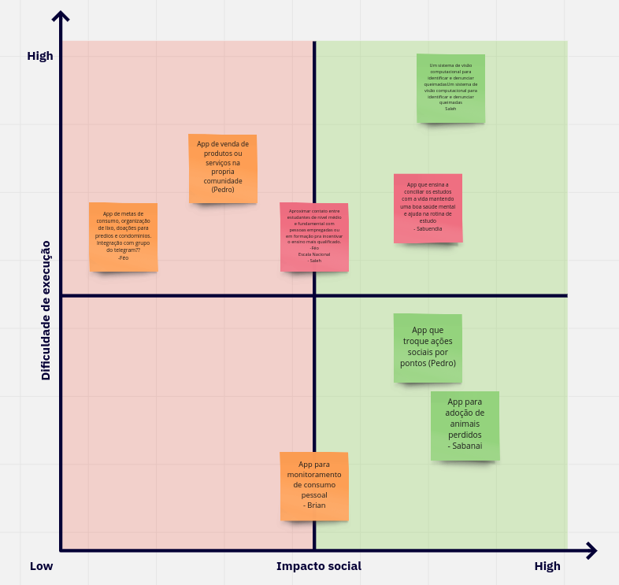

Todos os membros, tanto MDS quando EPS, se apresentaram, dizendo seus nomes, semestre e pretenções para a disciplina.
Dailies
Foi decidio que em primeiro momento as dailies ocorrerão via texto por meio de um grupo no Telegram.
Caso seja notado que os membros não estejam lendo ou interragindo a partir das dailies, providências serão tomadas.
As dailies ocorrerão de segunda a sexta as 18:30.
Canais de comunicação
Até o momento os canais de comunicação escolhidos são:
Discord: será utilizado para realizar reuniões e pareamentos.
Telegram: o telegram possuíra multiplas funções, haverá um canal de avisos, onde informações importantes serão centralizadas, um grupo destinado apenas para as dailies e grupos de interação para fácil acesso aos membros do grupo.
GitHub: serão utilizados comentários via Issues e PRs no github para comunicações a respeito de Issues ou implementaćoes de código.
Data e Horário das Reuniões
Foi decidido que as reuniões de sprint planning e review serao realizadas aos Sáabados às 9 da manhã.
Treinamentos e Qualificações
Foi criada uma planilha para rastrear o nível de conhecimento dos membros do grupo.
Os membros no geral decidiram que gostariam de trabalhar em cima das ODS e não dos dados abertos do governo.
Houve uma votação para decidir quais ODS os membros gostariam de trabalhar. Foi realizada uma votação, em que cada membro tinha o direito de votar até cinco vezes. O resultado foi o seguinte:

As ODS escolhidas foram:
Vida sobre a terra;
Consumo e produções responsáveis;
Educação de qualidade;
Em seguida cada um dos membros ficou responsável em dar pelo menos uma ideia de projeto para cada uma das ODS escolhidas. Os resultados foram os seguintes:

Logo em seguida, cada um dos membros receubeu três votos para votas nas ideias de cada uma das ODS. Os resultados foram:
Foram escolhidas três ideias de cada uma das ODS. Foram elas:
Vida sobre a terra:
Um sistema de visão computacional para identificar e denunciar queimadas;
App que troque ações sociais por pontos;
App para adoção de animais perdidos;
Consumo e produção responsáveis:
App de venda de produtos ou serviços na propria comunidade;
App de metas de consumo, organização de lixo, doações para predios e condominios;
App para monitoramento de consumo pessoal;
Educação de qualidade:
Aproximar contato entre estudantes de nivel médio e fundamental com pessoas empregadas ou em formação pra incentivar o ensino mais qualificado em escala nacional;
App para ajudar na rotina de estudo motivação;
App que ensina a conciliar os estudos c a vida mantendo uma boa saude mental;
Duas ideias da ODS "Educação de Qualidade" se uniram para formar a ideia "App que ensina a conciliar os estudos com a vida mantendo uma boa saúde mental e ajuda na rotina de estudo".
Em seguida, utilizamos uma matriz de Dificuldade de Execução por Impacto Social para nos ajudar a priorizar as ideias. Os resultados forma:

A partir da matriz de priorização foram escolhidas as seguintes ideias:
App para adoção de animais perdidos;
App que troque ações sociais por pontos;
App que ensina a conciliar os estudos com a vida mantendo uma boa saúde mental e ajuda na rotina de estudo;